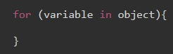

Этот цикл позволяет перебирать ключи (свойства) объекта. Но только тех ключей у которых свойство enumirable со значением true (т.е. эти ключи должны быть перечисляемые)
Синтаксис

variable - другое (очередное) имя свойства, назначается переменной на каждой итерации